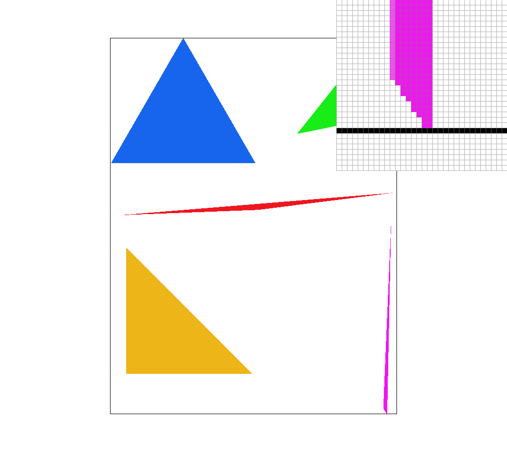

Simply put, rasterizing a triangle is the process of finding the lines and points that make up the triangle and then testing whether each pixel is inside the triangle or not. If it is, then we render it and if it is not then we leave it alone.
Explain how your algorithm is no worse than one that checks each sample within the bounding box of the triangle.My algorithm is based off of the point in triangle test from the lecture 2 slides. The boundary box is created by taking the points and finding the min and max coodinartes for the 2 for loops (x & y). This helps avoid checking every pixel on the screen, which would make it slower. Then after all of the checks are done, I call fill_pixel() if the pixel passed the test.
Show a png screenshot of basic/test4.svg with the default viewing parameters and with the pixel inspector centered on an interesting part of the scene.
My algorithm modifies the rasterize_triangle from task 1 by adding in 2 extra for loops to sample more pixels based on the sample rate (for ex. 2x2 would have pixels at offsets of 1/4 and 3/4). The offets for each sample rate are calculated based on the index and the base fraction of 0.5 / sqrt(sample_rate). The same point in triangle test occurs with each point and they are added to the sample buffer (which has been resized to be width * height * sample_rate) if they pass. Then, once all the subpixels are sampled, I went into resolve_to_framebuffer to average the color by adding up all of the subpixel colors and then dividing r,g,b by sqrt(sample_rate). rgb_framebuffer_target is then set to each color channel (current index + 0 is r, current index + 1 is g, and current index + 2 is b). Supersampling is useful for when you want to blur the edges of an image more so that it looks less jagged (i.e. helps get rid of jaggies). Through supersampling, I can average out the pixels' colors into something that looks more smooth. Instead of each pixel only being able to be one solid color, they can be a blend of multiple colors, which makes the edges stand out less.
Show png screenshots of basic/test4.svg with the default viewing parameters and sample rates 1, 4, and 16 to compare them side-by-side. Position the pixel inspector over an area that showcases the effect dramatically; for example, a very skinny triangle corner. Explain why these results are observed.sample rate = 1 - normal sampling, have a lot of jaggies because there is no blending

sample rate = 4 - the edges are more straight here because sampling the subpixels

sample rate = 16 - the edges are blurred a little bit, you can see that the color is a mix of the magenta and white background.

I edited the two rectangle arms of the robot so that it looks like it's waving. I rotated the left rectangles by 90 and then translated them so that they were parallel to the torso. Then I rotated the right upper arm by -45 and the lower arm by 90 and translated them accordingly.
Barycentric coordinates are a coordinate system with respect to a triangle. They maintain proportionality as the coefficient of the equation for barycentric coordinates have to add up to one. In the image below, each corner of the triangle represents a different color, whihc means that each color can be a barycentric coordinate. Since there's 3 colors and 3 points on the rectangle, the barycentric coefficients signify how much of each color triangle has. Thus when we insert the coefficients into the equation that combines them we end up with a color blend (since alpha, beta, and gamma, have to add up to 1, we don't end up with a situation where